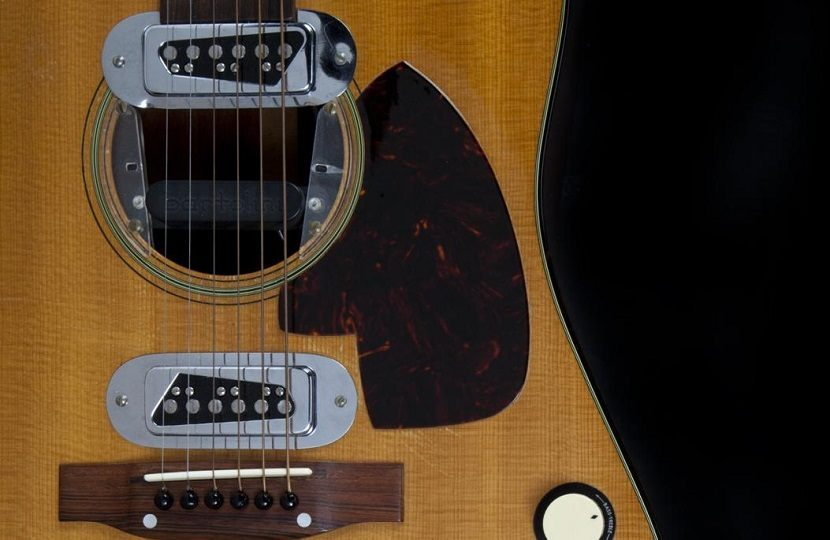
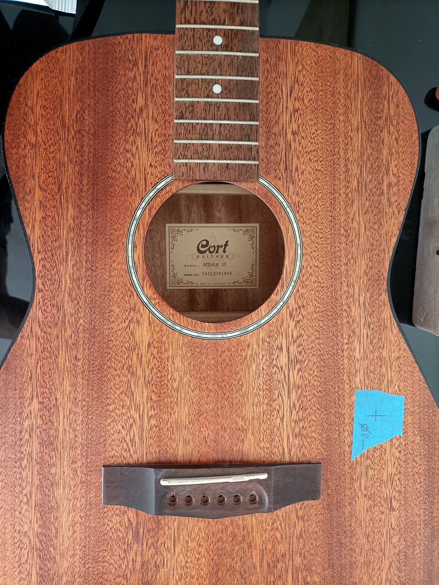
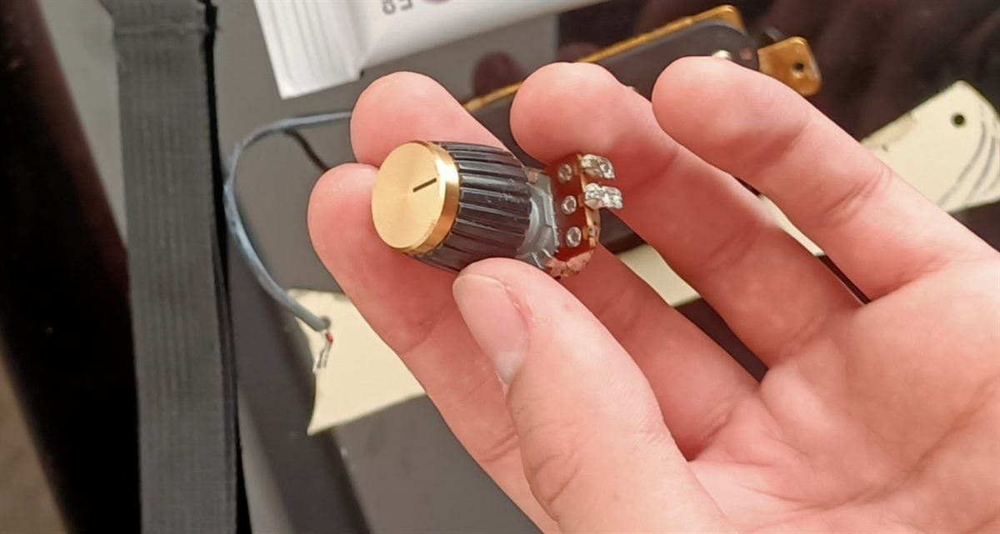
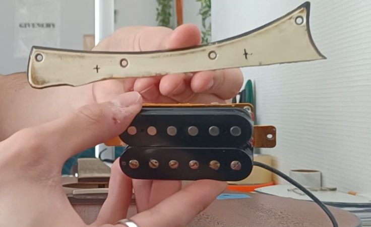
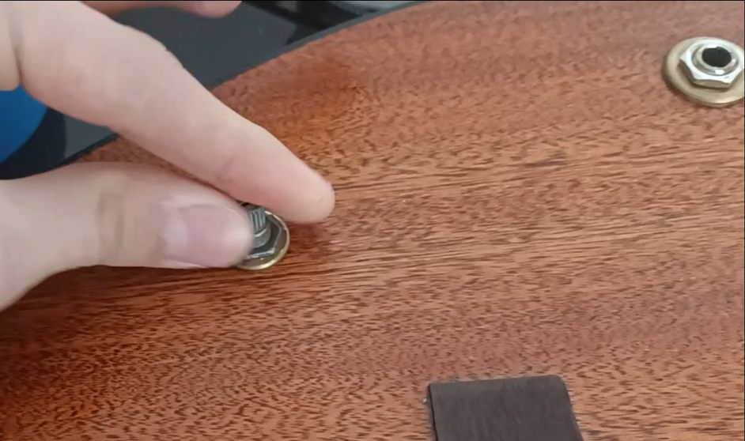
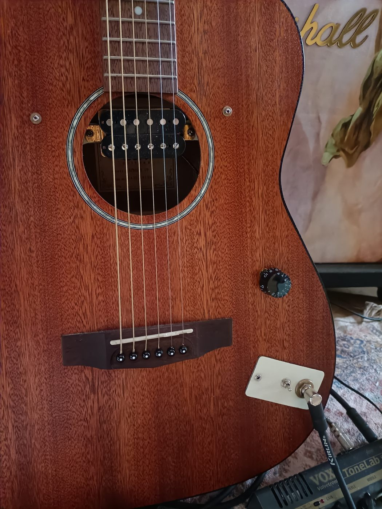
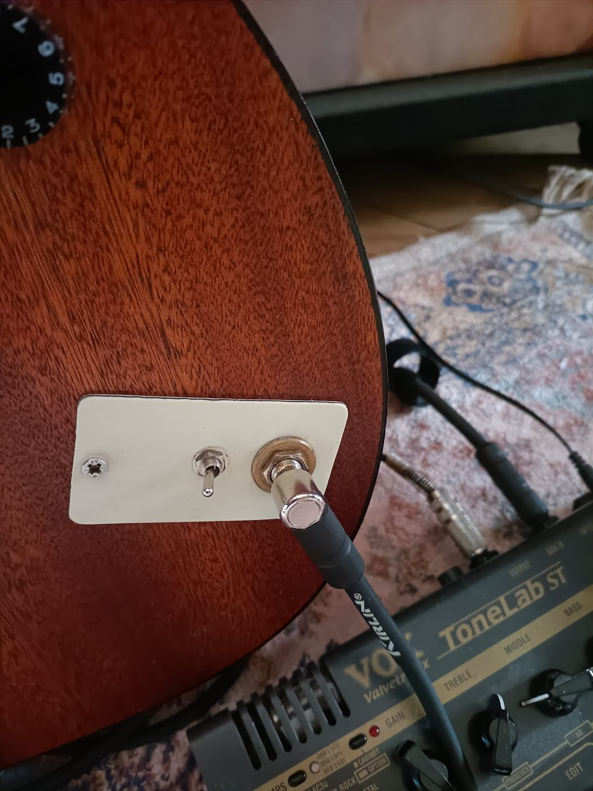
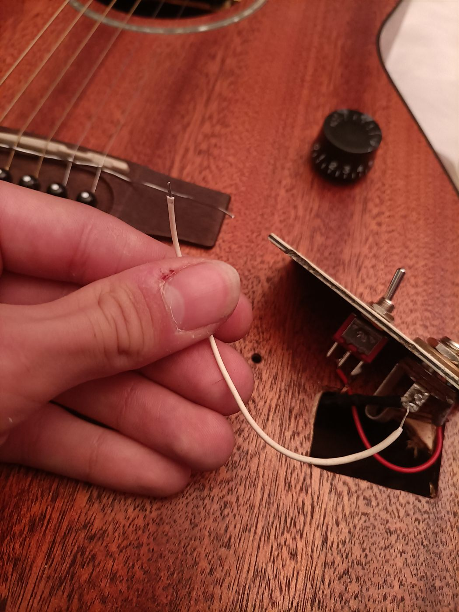

Cela fait maintenant 2 ans que j'ai fait l'acquisition d'une guitare acoustique folk de la marque Cort. La guitare en elle seule est de bonne qualité : un jeu confortable pour les afficionados des guitares électriques, un corp en acajou tout juste assez vernis, des mécaniques fonctionnelles etc…
Au tournant de l'année 2022, je me suis passionné pour l'album live MTV Unplugged de Nirvana, le son de la guitare Martin Co de Kurt Cobain m'a de suite plus autant en clean, qu'avec des effets. Je me suis donc demandé s'il était possible d'incorporer une partie de l'électronique présente dans une guitare électrique dans une guitare folk pour obtenir des résultats similaires.
Sont donc à ma disposition : Un micro format humbucker de type chevalet (Imp. 15k Ohms), un potentiomètre Alpha (log) de 500k Ohms, un interrupteur On/Off 2 positions, un morceau de pickguard provenant d'une SG et quelques autres pièces esthétiques optionnelles (bouton de volume, rondelle graduée et plaque de pvc en guise de "Front control plate").
Préambule : l'inspiration
Peu de temps après avoir découvert l'album live "MTV Unplugged" de Nirvana, je me suis intéressé aux instruments utilisés durant cette performance. Le son provenant de la guitare de Kurt Cobain me plaisait autant qu'il pouvait me surprendre : il jouait sur une guitare acoustique Martin Co !
Ayant acquis à cette période ma première guitare folk, je me suis donc lancé le défi de reproduire quelques caractéristiques électroniques de cette guitare comme l'installation d'un micro, et d'un réglage de volume.

Etape 1 :
Préparatifs
modèle Cort Af-510
Pour commencer, il a fallu se débarrasser des anciennes cordes pour laisser la table de l'instrument ainsi que la rosace à découvert. Il est important de noter que cette modification n'est possible que pour des instruments à cordes métalliques et non en nylon, pour cause le magnétisme généré par les vibrations des cordes métalliques.
Ensuite vient l'étape de la localisation des perçages nécessaires (potentiomètre 500K Ohms Log, sortie Jack 6,35, switch DPDT, vis de réglage de la hauteur du micro).
Le potentiomètre est placé près du jeu (niveau chevalet) à la façon d'une Fender Telecaster.

Etape 2 :
Adaptation et montage(en cours d'écriture)


Lien vers les vidéos du "Making" :
1) Timelapse + description : dai.ly/k5BqTMUE8mx12A3kHw
2) Test avec effets : dai.ly/x8syox


